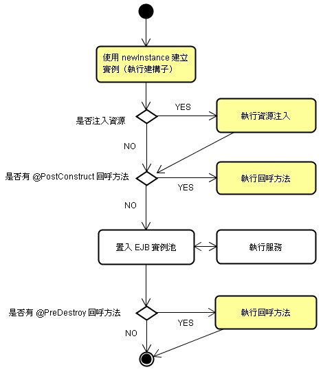

|
|
Message-Driven
Bean基本上跟Stateless Session Bean一樣，不會為客戶端保留特定狀態，與 Stateless
Session Bean 生命週期
中介紹的類似，容器使用newInstance()建立Message-Driven Bean（執行其建構子），若有資源依賴則加以注入。 您可以使用@PostConstruct標註某個方法，容 器是在注入資源之後，會再呼叫被@PostConstruct標註的方法。 之後，Bean會被置於EJB實例池中，在訊息來到之時，容器從池中取出Bean實例並執行其監聽方法（onMessage），執行完畢後，Bean將被 置回EJB實例池。 您也可以使用@PreDestroy標註某個方法，在Bean被銷毀前，容器會呼叫 該回呼方法。 下圖是Message-Driven Bean的生 命週期示意圖：  |